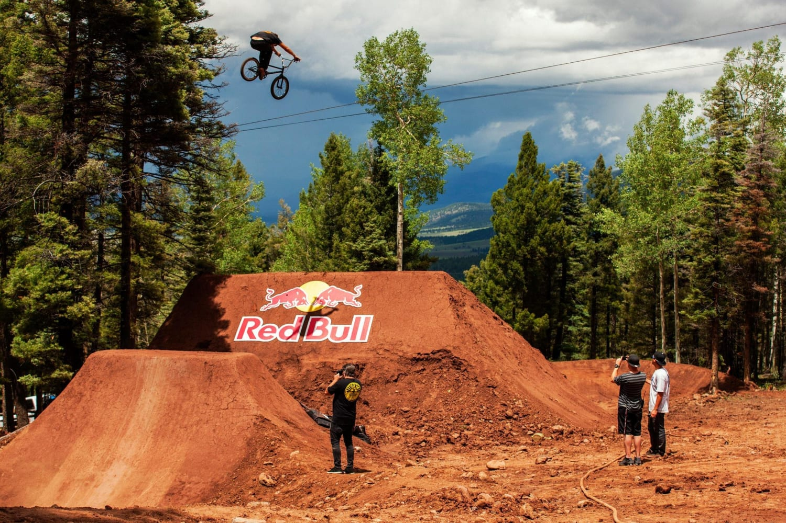

The dirt is the discipline of performing figures on bumps in the ground, during contests . The bumps are usually built by the users themselves; those of call and those of reception are, in general, separated by several meters, thus forming a long hollow between them.
Nowadays, dirt is a discipline that requires commitment in order to succeed in current figures such as 360 ° , backflip (back salto), frontflip (front salto), tailwhip (the frame of the bike rotates around the tube. direction) or busdriver , no hand , superman … The list of these tricks is long, and the best manage to perform several in the same jump.
